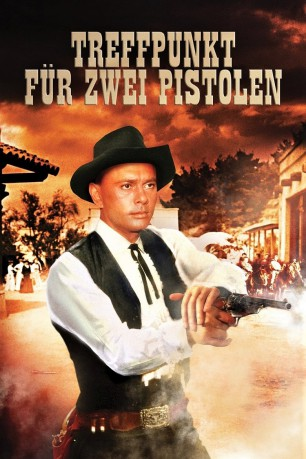

#9824 Treffpunkt für zwei Pistolen
Alternativ: Invitation to a Gunfighter - Duell am Rio Bravo
 
 IMDB-Wertung: 6.3 / 10
IMDB-Wertung: 6.3 / 10  Metascore: 0
Metascore: 0 
Revolverheld Jules Gaspard d'Estaing wird nach New Mexico gerufen. In dem Nest Pecos soll er den randalierenden Bürgerkriegsveteran Weaver beseitigen. Der ist einem skrupellosen Bankier im Weg, der Weaver eiskalt sein Land und seine Frau genommen hat. Aber Jules beginnt an seinem Auftrag zu zweifeln.
Jahr: 1964
Dauer: 92 Minuten
FSK: 16
Land: USA Studio: United ArtistsTonspuren:
Untertitel: Deutsch,
Auflösung: 1080p (1792x1080) Größe: 7833 MB
Genre: Western, Liebe
Regisseur: Richard Wilson
Drehbuch: Alvin Sapinsley, Hal Goodman, Larry Klein, Elizabeth Wilson, Richard Wilson
Soundtrack: David Raksin
Darsteller:
Datei: X:\HD-Western-1960-1979\Treffpunkt für zwei Pistolen (1964, FSK16, 1792x1080).mkv seit 29.10.2018
Festplatte: HD Eastern+Western
 Es gibt insgesamt 110 Filme in der Gruppe 'HD-Western-1960-1979'
Es gibt insgesamt 110 Filme in der Gruppe 'HD-Western-1960-1979'